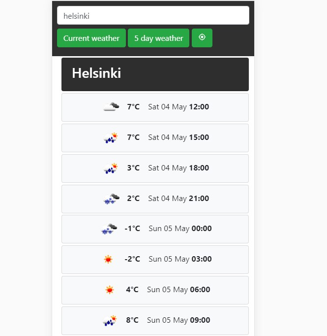
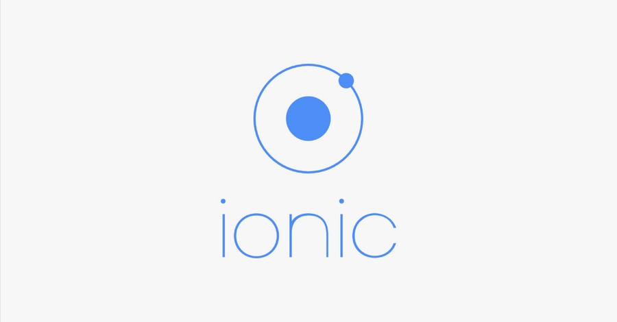

Personal projects

WEB-APP
Weather
Stacks used JavaScript, HTML, CSS, REST API
Frameworks used: jQuery
User can write city in the input box and search that city's
current weather, 5 day weather or use user GPS location to
determine location.
http://1800705.azurewebsites.net/saa/

SCHOOL TASKS
Ionic 4 Mobile app development and design tasks
Stacks used: TypeScript, HTML, SCSS
Frameworks used: Angular, Ionic 4
- Mobile UX and UI design principles and best practices
- Creating Firebase database connection and authentication.
- Using different components such as sliders, side menu, tabs and label.
- Prototyping with online tools
- Simple and professional mobile app design
Projects and tasks can be found in my GitHub
https://github.com/federaljules/